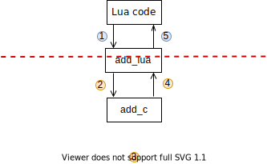

Table of contents
This post is part 1 of a brief 2-part series summarizing the things I learned as a part of the Google Summer of Code event.
I was able to work on the Pallene programming language's compiler, under the organization LabLua. The event isn't exactly over at the time of me writing this, but I'll try and summarize the meat of the matter.
I want to keep a low entry-barrier to the problem we tackled this summer, so I'll defer the actual GSoC coding period to the next post, by going over some of the preliminaries and covering the current state of the Pallene compiler.
Lambdas and Closures
(If you're already familiar with what closures and lambda functions are, consider skipping over this part)
The term "lambda" generally refers to anonymous functions in programming languages. You're probably already used to them. For example, in the snippet below we are creating a name-less function that returns 10 and calling it immediately.
print((function() return 10 end)() + 10) -- 20The term "closure" refers to a function that can capture variables from outside it's scope and retain references to them even after the surrounding scope has been exited.
local function make_adder()
local num = 100
return function (y)
return x + num
end
end
local adder = make_adder()
print(adder(10)) -- 110Notice how on the last line, when adder is called, it's able to correctly fetch the value associated with variable num, even though that variable was supposed to "disappear" as soon as the runtime exits make_adder's local scope? That's because the function returned by make_adder is a "closure" (1).
Lua originally introduced the indirection of upvalues to implement closures that are amenable to a single pass compiler for an interpreted language. Upvalues are variables referenced by a function that live outside the scope of the said function. Under the hood, the Lua interpreter moves local variables (which live on the lua stack) that are referenced by upvalues, to some place in the heap when their scope is about to end. This way, the function can still carry a reference to the variable's heap location and use that to read/write to upvalues.
Lua's sister languages
(If you're not interested in Lua trivia, skip this part)
There are several sister languages to Lua that either transpile to, or take inspiration from the language. I'll list them briefly in this section in case they're of interest to you.
- Pallene: Statically typed, compiles to C and can use Lua's C-API to communicate with the Lua runtime. Users can author Pallene scripts, make shared object libraries and import them in regular Lua programs.
- Teal: Statically typed, transpiles to Lua. I like to think of it as Lua's Typescript.
- Moonscript: Duck typed, transpiles to Lua. Whitespace sensitive with classes and lots of syntactic sugar. This is popular among the LÖVE2D community. Takes heavy inspiration from coffeescript.
- Jammy: Duck typed, transpiles to Lua. It's very much like Moonscript but I like it's syntax more personally.
- Ravi: Lua with optional static typing and support for JIT. This uses a more enhanced version of the LuaVM.
- Nelua: Statically typed, compiles to C. A systems programming language with Lua-like syntax and static types.
- Terra: Statically typed and compiles to native code. Has support for metaprogramming through Lua.
- Fennel: Duck-typed LISP that transpiles to Lua. Also popular in the game programming community.
- Amulet Functional language with a strong type system that transpiles to Lua. Belongs to the ML family.
- Kailua: Similar to facebook's Flow in that it's just tooling for regular lua where type annotations are allowed via comments!
- Wu: Statically typed language that transpiles to Lua, written in Rust!
These are some of the most "developed" Lua dialects that I've seen in my time fiddling with the language, and I find all of them very amusing. There also exists my own experiment that I plan to finish the lua transpiler for some day.
Pallene
Pallene is a statically typed dialect of Lua that compiles down to C code. For the most part, Pallene uses it's own internal APIs and libraries to do all the computation. Sometimes however, it makes calls to the Lua VM's C-API to communicate with the runtime. Due to this, it becomes possible to write Pallene code, compile it to C libraries and then import them in Lua with require.
It is worth noting that Lua allows writing extension modules in C and then importing them from Lua. In fact, all of the language's standard library itself is actually written in C! This feature is facilitated via dynamic loading of shared C libraries using dlopen and it's windows/mac counterparts.
The Lua reference manual describes how to author C libraries in detail here. I'd recommend getting familiar with it before continuing further.
Now let's consider a sample code snippet written in Pallene:
local m: module = {}
function m.add(a: integer, b: integer): integer
return a + b
end
return mPallene code is very similar to standard lua code + the type annotations and some minor semantic differences. I highly recommend reading the short manual to get a taste of the language.
Pallene works by compiling to C, and then using gcc to compile the C to shared libraries which can then be imported into lua scripts and called from Lua. For instance, the add function above compiles to the following C code (cleaned up and some unnecessary details omitted):
// This function is internally used by pallene and not visible to the user
static lua_Integer add_c(lua_Integer a, lua_Integer b) {
return a + b;
}
// This is the function exposed as a part of the Pallene module 'm'.
// function m.add(a, b)
int add_lua(lua_State *L) {
StackValue *base = L->ci->func; // [1]
int nargs = lua_gettop(L); // [2]
lua_Integer a = ivalue(s2v(base + 1));
lua_Integer b = ivalue(s2v(base + 2));
lua_Integer ret = function_02(a, b); // [3]
lua_pushinteger(L, ret); // [4]
return 1;
}The first interesting point to note is that our Pallene function add got compiled to two C functions. Why is that?
It's because Lua allows users to author functions in C (see lua_CFunction), which can be called by the Lua interpreter. However, these functions must follow a certain convention. That being:
- A function callable by the lua interpreter must be of the type
int (*)(lua_State*). - The arguments are placed on the lua stack right on top of the function, in order.
- The function must push the return value(s) onto the stack, and return the number of values it pushed to the stack.
The add_lua 's lua suffix signifies the fact that it's a lua_CFunction , which is called by pushing the arguments to the stack and transferring control to it. Then the function performs following actions:
- Get a reference to the base of the current call frame, this is a pointer to the function object that is being called (a.k.a
add_lua's address in the Lua stack). Offsets from this pointer can be used to refer to arguments. - Extract the the number of arguments, and the numeric arguments
aandbfrom the stack, put them into C local variables (2). - Call the corresponding C entry point with the right arguments, and store the return value from that in yet another C local variable.
- Push the value received onto the Lua stack, and signal that one value was returned by
return 1-ing the control back to the Lua Runtime.
You'll notice that the C-entry points of the functions (add_c) mirror the user-written Pallene code more closely and that the Lua-entry points (add_lua) just exist to act as a bridge between the Lua runtime and the Pallene runtime. They perform the task of type-checking arguments, and passing the arguments from Lua's dynamic world to C's statically typed world. An eagle's eyes view of this can be imagined to be something like so:
In this image, the steps colored blue are controlled by the Lua interpreter's runtime and the steps colored in yellow are governed by the C code which is generated by the Pallene compiler.
Closures in Pallene
Before diving into this part, it helps to establish some terminology to make sure we're on the same page:
- Lua user code: The user-written Lua scripts that may call our Pallene module exposed functions.
- Lua entry point: The helper C function generated by the Pallene compiler which receives arguments from the Lua user code and transfers them to the C-entry point. It is a lua_CFunction. e.g-
add_lua. - C entry point: The C version of the Pallene user code, also generated by the Pallene compiler. This is a direct representation of the user's logic in C. e.g -
add_c.
This is where the proposal comes in. The above convention has no support for higher order functions and closures. Some things to keep in mind when approaching this problem:
- Standard C does not allow nested functions or closures (3).
- Lua however does support Closure objects that can defer to C functions for executing the logic (see CClosure).
- The "Lua user code ↔ Lua entry point" convention is rigidly specified by lua and must follow the aforementioned rules for every lua_CFunction.
- The "Lua entry point ↔ C entry point" calling convention is flexible and up to discretion the Pallene authors. Can we take advantage of this by passing some extra arguments to the C entry point that represent the upvalues?
The C-Closures in Lua are more or less defined as such:
struct CClosure {
lua_CFunction f; /* C function containing the logic */
TValue* upvalues; /* Dynamic array containing the upvalues */
};
This way of thinking about closures is the key. A closure can be thought of as a bag containing two items: the code and the data. The "code part" uses the "data" to compute results.
Another key observation to make can be seen via this image:
Every part of the convention above the dotted red line is rigidly defined by the Lua standard, and can't be altered. However, parts of the convention below the red-line are completely in Pallene's control.
We just have to make sure that the C function is able to find the upvalues somewhere. They can be stored in a global map, array or better, the upvalue list of the CClosure object itself! With this in mind, the calling convention can be thought of as such (pseudocode):
int lua_entry_point(lua_State* L) {
base = get_base(L); // get the base of the current call-frame
current_func = (CClosure*)(base); // cast the base to a CClosure
upvalues = current_func->upvalues;
c_entry_point(L, upvalues, arg1, arg2);
}The upvalues will be passed as an extra argument to the C entry point. The same C-entry point can work with different sets of upvalues belonging to different CClosure objects. The "logic" can remain independent and work with different sets of "data".
The process of converting higher order functions written in Pallene to C is still left unexplained in this post. I also haven't answered questions such as:
- When/How are the closures created? Who creates them (Lua/C)?
- What about Garbage Collection? How does it affect the upvalues?
- How to facilitate mutation of upvalues?
I intend to answer these questions in part 2!
If you've loosely understood most of what we went through so far, then you're ready to understand the rest of the idea mentioned in this document. This was a part of my GSoC proposal which I wrote with help from my mentor, Hugo Musso Gualandi.
Up Next.
In the next blog post, I intend to summarize the work I did over this summer. A brief rundown of the problems I faced and things I learned.
Backmatter
- Some experts argue that calling capturing functions "closures" is a misnomer since the word has a separate meaning in mathematics and set theory, but we're going to look past that for this write-up.
- It is possible for the user on the Lua side of the world to pass arguments with incorrect types, Pallene guards against this by emitting some runtime type checking code which I've omitted for brevity's sake.
- Some C compilers support lambdas and closures using non-standard extensions called Blocks.